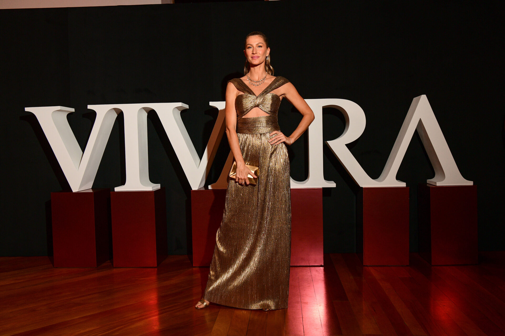
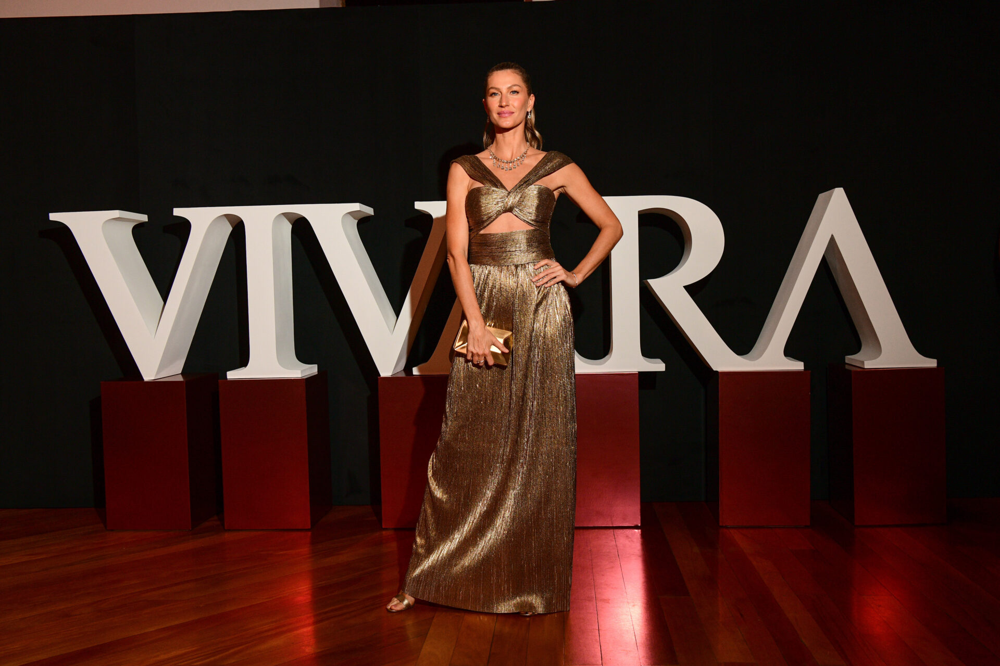
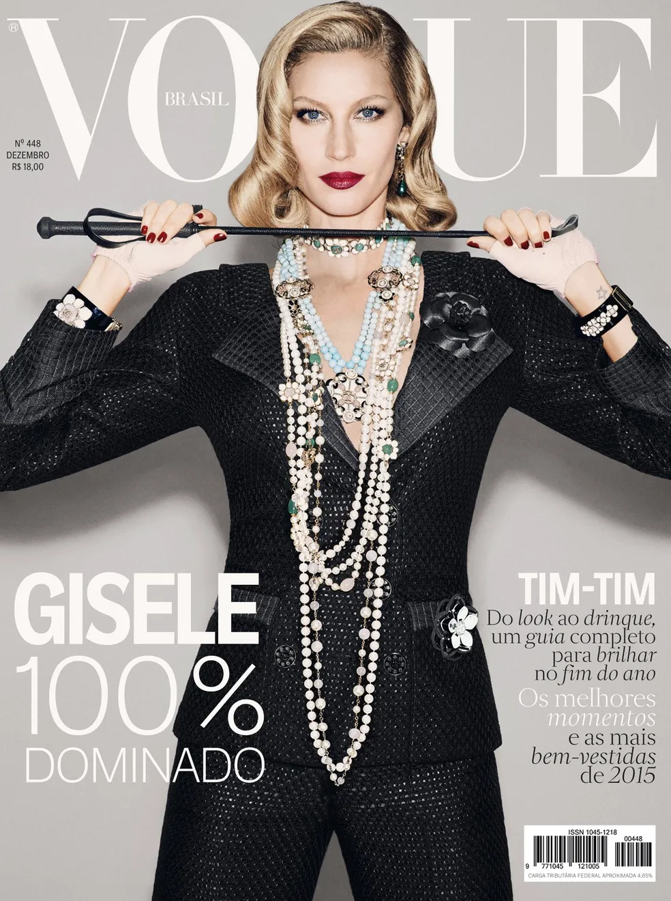

Para sua nova coleção, a rede de joalherias Vivara decidiu retrabalhar o icônico e característico “V” da marca, através da campanha VLove. Inspirada na logomania, tendência nascida com o objetivo de ser um recurso para evitar cópias e que virou hit entre os anos 1900 e 2000. A escolhida para dar vida à campanha, foi a über model Gisele Bündchen, que já esteve presente em outros lançamentos da joalheria.
A Vogue Brasil foi a que teve Gisele mais vezes na capa (20), em seguida aparecem a Vogue do Reino Unido (15) e a da Coreia do Sul (13). Gisele Bündchen para a Vogue Itália de março de 2023. Gisele no topo do mundo Desde então, foram nada 131 capas da revista, 108 capas em que apareceu sozinha, outras 23 em que dividiu o lugar com outra pessoa
.jpg)
Gisele conta que o C6 Bank, além de ser um banco para a vida dos clientes, também pode ser um banco para a vida de seus negócios. “Com o C6 Empresas, você conta com toda a experiência, a exclusividade e a assessoria especializada que você já está acostumado no C6. E tudo isso pelo celular ou no computador”, afirma a modelo e empresária. O filme foi gravado na sede do C6 Bank, em São Paulo.